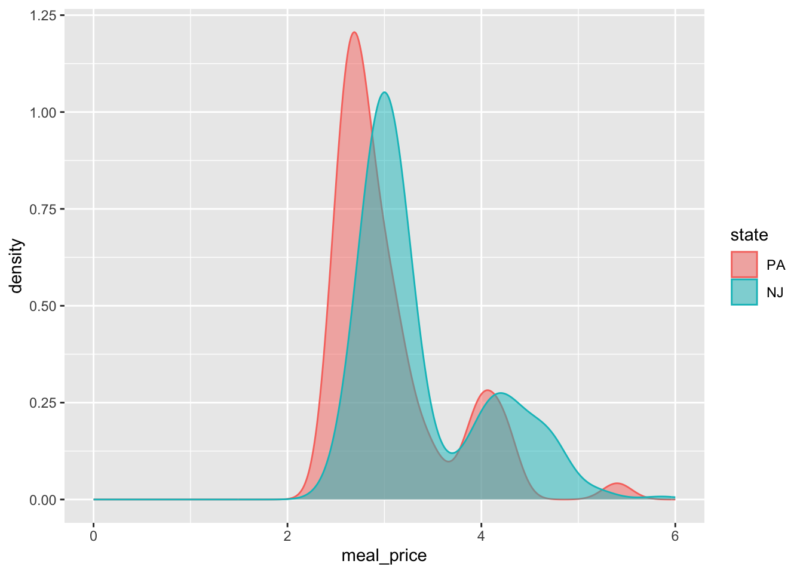

AE 18: minimum wage
Card and Krueger (1994 AER) is a famous study on the impact of minimum wage increases on employment. The abstract reads:
On April 1, 1992, New Jersey’s minimum wage rose from $4.25 to $5.05 per hour. To evaluate the impact of the law we surveyed 410 fast-food restaurants in New Jersey and eastern Pennsylvania before and after the rise. Comparisons of employment growth at stores in New Jersey and Pennsylvania (where the minimum wage was constant) provide simple estimates of the effect of the higher minimum wage. We also compare employment changes at stores in New Jersey that were initially paying high wages (above $5) to the changes at lower-wage stores. We find no indication that the rise in the minimum wage reduced employment.
The data in Card and Krueger are purely observational, but the main idea is that the arbitrary placement of otherwise similar restaurants on either side of the PA/NJ border acts as if a controlled, randomized experiment were performed, and so we can use these data to draw causal conclusions about the impact of minimum wage policy on employment.
You already played with these data on Lab 5, but that was before we had begun working with multiple linear regression, and before we had studied statistical inference. So let us revisit this study with our new tools.
Packages
You know the drill:
Data
Load in dat data:
card_krueger <- read_csv("data/card-krueger.csv")
card_krueger <- card_krueger |>
mutate(
state = fct_relevel(state, "PA", "NJ")
)
glimpse(card_krueger)Rows: 351
Columns: 13
$ id <dbl> 56, 61, 445, 451, 455, 458, 462, 468, 469, 470, 474, 481, …
$ chain <chr> "Wendy's", "Wendy's", "Burger King", "Burger King", "KFC",…
$ co_owned <dbl> 1, 1, 0, 0, 1, 1, 1, 0, 0, 0, 0, 1, 1, 1, 0, 0, 1, 1, 0, 1…
$ state <fct> PA, PA, PA, PA, PA, PA, PA, PA, PA, PA, PA, PA, PA, PA, PA…
$ emp_diff <dbl> -14.00, 11.50, -41.50, 13.00, 0.00, -0.50, 2.00, -29.00, 4…
$ wage_st <dbl> 5.00, 5.50, 5.00, 5.00, 5.25, 5.00, 5.00, 5.00, 5.00, 5.50…
$ wage_st2 <dbl> 5.25, 4.75, 4.75, 5.00, 5.00, 5.00, 4.75, 5.00, 4.50, 4.75…
$ hrsopen <dbl> 12.0, 12.0, 18.0, 24.0, 10.0, 10.0, 12.5, 18.0, 18.0, 18.0…
$ hrsopen2 <dbl> 12.0, 12.0, 18.0, 24.0, 11.0, 10.5, 12.0, 18.0, 18.0, 18.0…
$ fte <dbl> 34.00, 24.00, 70.50, 23.50, 11.00, 9.00, 15.50, 58.00, 26.…
$ fte2 <dbl> 20.0, 35.5, 29.0, 36.5, 11.0, 8.5, 17.5, 29.0, 30.5, 26.0,…
$ meal_price <dbl> 3.48, 3.29, 2.86, 2.85, 3.78, 3.99, 3.17, 2.84, 2.60, 2.75…
$ meal_price2 <dbl> 2.58, 2.80, 2.84, 2.89, 4.10, 3.95, 2.91, 2.67, 2.60, 2.81…Variables include:
-
id: a unique identifier for each restaurant; -
state: which state is the restaurant in? -
chain: which restaurant chain does the store belong to? -
co_owned: is the restaurant company owned? -
wage_standwage_st2: the starting wage in US dollars before and after policy change; -
fteandfte2: full-time-equivalent employment before and after the change, calculated as the number of full-time workers (including managers) plus 0.5 times the number of part-time workers; -
hrsopenandhrsopen2: number of hours open per day; -
meal_priceandmeal_price2: the price of a meal (soda, fries, entree); -
emp_diff:fte2-fte.
Question: are these data tidy?
Explore and visualize
The core claim of the study is that the two groups of restaurants are indistinguishable in all respects except for the minimum wage policy, and so any differences in employment can be ascribed to the causal impact of that policy. Let’s see how the states compare.
Compare chain composition
Do both states have roughly the same proportions of each restaurants in each chain? Create a figure that answers this question.
Same proportion of company owned?
Compare meal prices
How did the distribution of meal prices in each state compare before and after the policy change?
ggplot(card_krueger, aes(x = meal_price, color = state, fill = state)) +
geom_density(alpha = 0.5) +
xlim(0, 6)
ggplot(card_krueger, aes(x = meal_price2, color = state, fill = state)) +
geom_density(alpha = 0.5) +
xlim(0, 6)Investigate: Why is the distribution bimodal?
card_krueger |>
filter(state == "NJ") |>
ggplot(aes(x = meal_price, color = chain, fill = chain)) +
geom_density(alpha = 0.5) +
xlim(0, 6)Point estimate
Here is the simple linear regression that you fit on Lab 5:
simple_fit <- linear_reg() |>
fit(emp_diff ~ state, data = card_krueger)
tidy(simple_fit)# A tibble: 2 × 5
term estimate std.error statistic p.value
<chr> <dbl> <dbl> <dbl> <dbl>
1 (Intercept) -1.88 1.07 -1.75 0.0807
2 stateNJ 2.28 1.19 1.91 0.0566Fit an alternative model with multiple predictors
Fit a new model that controls for the restaurant chain and whether or not it is company owned:
multiple_fit <- linear_reg() |>
fit(emp_diff ~ state + chain + co_owned, data = card_krueger)
tidy(multiple_fit)# A tibble: 6 × 5
term estimate std.error statistic p.value
<chr> <dbl> <dbl> <dbl> <dbl>
1 (Intercept) -1.45 1.21 -1.20 0.232
2 stateNJ 2.28 1.20 1.91 0.0575
3 chainKFC 0.235 1.30 0.181 0.857
4 chainRoy's -2.08 1.32 -1.58 0.116
5 chainWendy's -0.757 1.49 -0.507 0.612
6 co_owned 0.373 1.10 0.339 0.735 Which model is “best”
glance(simple_fit)# A tibble: 1 × 12
r.squared adj.r.squared sigma statistic p.value df logLik AIC BIC
<dbl> <dbl> <dbl> <dbl> <dbl> <dbl> <dbl> <dbl> <dbl>
1 0.0104 0.00754 8.71 3.66 0.0566 1 -1257. 2520. 2532.
# ℹ 3 more variables: deviance <dbl>, df.residual <int>, nobs <int>glance(multiple_fit)# A tibble: 1 × 12
r.squared adj.r.squared sigma statistic p.value df logLik AIC BIC
<dbl> <dbl> <dbl> <dbl> <dbl> <dbl> <dbl> <dbl> <dbl>
1 0.0204 0.00619 8.72 1.44 0.211 5 -1255. 2524. 2551.
# ℹ 3 more variables: deviance <dbl>, df.residual <int>, nobs <int>The simpler model has higher adjusted \(R^2\), so we prefer it.
Interval estimate
Compute and visualize a 95% confidence interval for the change in average employment before and after the policy change:
empdiff_state_fit <- card_krueger |>
specify(emp_diff ~ state) |>
fit()
set.seed(8675309)
boot_fits <- card_krueger |>
specify(emp_diff ~ state) |>
generate(reps = 1000, type = "bootstrap") |>
fit()
ci_90 <- get_confidence_interval(
boot_fits,
point_estimate = empdiff_state_fit,
level = 0.90,
type = "percentile"
)
ci_90# A tibble: 2 × 3
term lower_ci upper_ci
<chr> <dbl> <dbl>
1 intercept -4.17 0.425
2 stateNJ -0.0884 4.66 visualize(boot_fits) +
shade_confidence_interval(ci_90)Hypothesis test
Test these hypotheses at a 5% discernibility level:
\[ \begin{aligned} H_0&: \beta_1=0 \quad(\text{no change})\\ H_0&: \beta_1\neq0 \quad(\text{some change}) \end{aligned} \]
Compute, visualize, and interpret the p-value.
set.seed(20)
null_dist <- card_krueger |>
specify(emp_diff ~ state) |>
hypothesize(null = "independence") |>
generate(reps = 1000, type = "permute") |>
fit()
visualize(null_dist) +
shade_p_value(obs_stat = empdiff_state_fit, direction = "two-sided")null_dist |>
get_p_value(obs_stat = empdiff_state_fit, direction = "two-sided")# A tibble: 2 × 2
term p_value
<chr> <dbl>
1 intercept 0.054
2 stateNJ 0.054If the null hypothesis were true, the probability of a result as or more extreme than the one we computed would be 5.4%. So we just barely fail to reject the null at the 5% level.